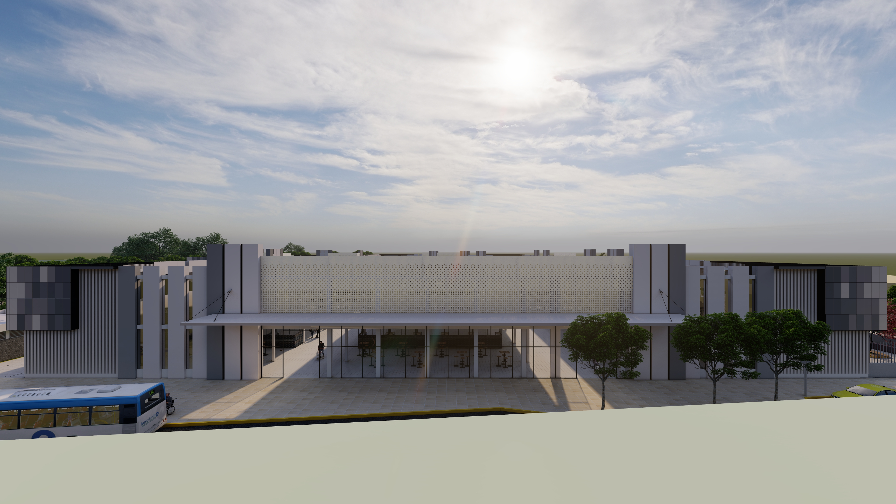
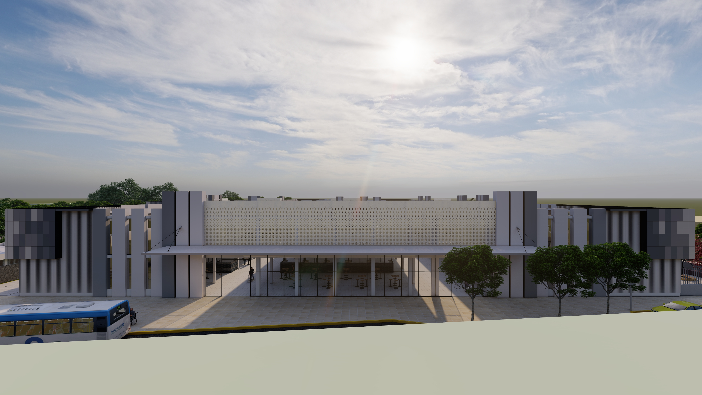

Hola, soy Darío Apolo
Mi experiencia combina el diseño urbano sostenible con la gestión técnica de obras públicas, orientado siempre a mejorar la calidad de vida de las personas a través de espacios inclusivos y resilientes.
He participado en más de 20 proyectos de parques, plazas y regeneraciones urbanas, integrando criterios de accesibilidad universal, movilidad activa y sostenibilidad ambiental. Mi enfoque está inspirado en referentes como Jane Jacobs, Jan Gehl y Kevin Lynch, aplicados al contexto local de Machala para generar una ciudad más humana y conectada.
Además de mi labor en el sector público, desarrollo propuestas alternativas de planificación urbana y proyectos privados con visión integral: desde corredores ecológicos hasta planes maestros con criterios de eficiencia energética, drenaje urbano sostenible (SUDS) y resiliencia climática. Creo firmemente que el urbanismo es una herramienta para construir comunidades más justas, saludables y felices.
Proyectos
Selección de proyectos destacados

Corredor Ecológico

 
